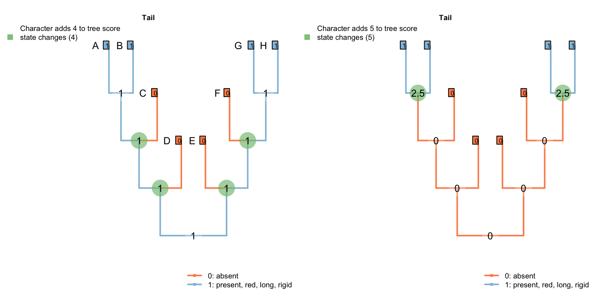

7 Ambiguity
Ambiguous data does not pose a problem for the algorithm, but the nature of the ambiguity must be considered when scoring a character.
7.1 Ambiguity when parent character ambiguous
If it’s not clear whether or not a taxon has a tail, then tail colour should be coded as ?, denoting that any possible token (including the inapplicable token) may be the most parsimonious for the tail.
In trees in which the tail can be reconstructed as present, the ambiguous tip will be reconstructed as having a tail of the appropriate colour:

In trees in which the tail cannot be reconstructed as present without inferring a homoplasious origin, the tail colour will be reconstructed as inapplicable:

7.2 Ambiguity when parent character known
If a taxon is known to have a tail, there are two scenarios for ontologically dependent transformational characters:
7.2.1 Subordinate character has finite states
If the subordinate character must take one of a finite set of values, then the unobserved property of the tail is known to belong to these values and should be coded accordingly.
For example:
- Tail: (0), absent; (1), present
- Tail margin: (0), smooth; (1), serrated.
Assume that the tail margin must either be smooth or serrated, and there is no reason to assume that either state is ancestral (i.e. the character is strictly transformational). Tail margin should then be coded as {01}: i.e. the tail is known to have taken one of the two states 0 or 1.
7.2.2 Subordinate character may have unobserved states
A more complicated situation arises where a subordinate character may have unobserved states, as with
- Tail colour: (0), red; (1), blue.
A taxon that is known to have a tail, but whose tail colour is uncertain, should generally be coded as ?.
Coding it as {01} would be appropriate if the tail was known to certainly be homologous with other tails in the dataset, in which case it would be most parsimonious to assume that the tail colour is the same colour as the ancestor of the tip, which was necessarily either red or blue.

But if, as will more often be the case, homology of the tails is not known a priori, then it is possible that this taxon has a tail that is not homologous with any other tail whose colour has been observed.
In this case, coding the tail colour as {01} states that the tail is the same colour as a tail that has already been observed. This means that the independent origin of the tail also represents an independent origin of this particular colour – and hence an instance of homoplasy.

Coding the tail colour as ? allows the possibility that the independently- evolved tail has a different colour to the tails already observed – green, perhaps. Reconstructing the tail colour as a colour that has not already been observed avoids an instance of homoplasy, and is therefore more parsimonious.
In the case that the unknown tail evolved independently and was green, the original character formulation – which only provides tokens for red and blue tails – cannot be applied and is thus inapplicable. Our algorithm will thus reconstruct tail colour as being inapplicable in such a taxon.

7.3 Recommendation
We therefore recommend the following coding schema for ambiguous tips where the tail is (A) known to be present; (B) ambiguous; (C) known to be absent:
| A | B | C | |
|---|---|---|---|
| Tail: (0), absent; (1), present. | 1 | ? | 0 |
| Tail margin: (0), smooth; (1), serrated. | {01} | ? | - |
| Tail colour: (0), red; (1), blue. | ? | ? | - |
This vignette describes how the algorithm approaches some example trees. We follow the example of a tail coded using two characters:
- Tail: (0), absent; (1), present;
- Tail colour: (0), red; (1), blue.
7.4 Some caterpillars
First we’ll address some pectinate “caterpillar” trees, in which eight taxa have tails (and eight do not), four of which are red, four of which are blue.
An optimal tree with this character invokes a single origin of the tail, and a single change in tail colour, thus incurring a score of two. Here is one example:

If we insist that the tail evolves twice, then the best score is accomplished by reconstructing a different colour of tail in each of the two regions in which the tail is present. On a caterpillar tree, this means the loss of a tail that has one colour, and an independent innovation in a tail-less taxon of a tail that has a different colour:

Under the parsimony criterion, it is considered less optimal if a tail, when it re-evolves, happens to independently re-evolve a colour that has already been observed – “blueness” has evolved twice on the following tree, meaning that the second innovation of “blueness” represents an instance of homoplasy.
7.4.1 Three equally suboptimal alternatives
The following three trees differ in the number of innovations of the tail that are implied, and the number of changes in tail colour. All are equally parsimonious.
Under the first, our algorithm reconstructs the tail as ancestrally present, being lost on edge 2, gained on edge 5, lost in tips H and I, lost on edge 11, and gained on edge 14 (a total of six homoplasies). It further reconstructs independent, homoplastic origins of tail redness on edge 5, tail blueness on edge 14, and a change in tail colour from red to blue somewhere between edges 7 and 9 (three homoplasies).

In the second, our algorithm reconstructs the tail as ancestrally present, being lost in tips B, D, E, H, and I, and on edge 11, before being independently gained on edge 14 (a total of seven homoplasies).
It further reconstructs an independent, homoplastic origins of tail blueness on edge 14, and a change in tail colour from red to blue somewhere between edges 7 and 9 (two homoplasies).

The third configuration reconstructs the tail as ancestrally present, being lost in tips B, D, F, H, J, L, N and P (a total of eight homoplastic losses). It further reconstructs a single change in tail colour from red to blue on edge 8.

7.4.2 A better caterpillar tree
The tree below obtains a better score than any of the previous three: it implies a loss of the tail at edge 2, a gain at edge 6, a loss at edge 10, and a gain at edge 14; it invokes a homoplastic origin of redness at edge 6, one of blueness at edge 14, and a change in colour at edge 8, for a combined score of 7.

7.5 De Laet’s caterpillars
De Laet (2017) identifies a corner case in which our algorithm will not reconstruct every equally-parsimonious character reconstruction. Below is a simplified version of his example:
| A | B | C | D | E | F | G | H | |
|---|---|---|---|---|---|---|---|---|
| Tail: (0), absent; (1), present. | 0 | 1 | 1 | ? | 0 | 0 | 1 | 1 |
| Tail, colour: (1), red; (2),blue. | - | 1 | 1 | ? | - | - | 2 | 2 |
When optimising tail colour, we reconstruct the tail as present at all internal nodes, with independent losses of the tail in each of the three tailless taxa (i.e. edges 1, 9, 11).

The Fitch algorithm identifies other reconstructions as equally parsimonious: for example, a tail may have been lost on edge 6 and re-gained on edge 12. This also incurs three steps for the tail character, and (in De Laet’s parlance) attributes three similarities to common ancestry: the presence of a tail in tips B and C, the absence of the tail in tips E and F, and the presence of a tail in tips G and H.
We prefer reconstructions that attribute the presence of a feature to common ancestry where possible – a philosophy that shares something with Dollo’s contention that it is easier to lose a feature than to gain it. On a pragmatic level, this maximises the opportunity for subsidiary traits of the tail to be attributed to common ancestry.
In this particular case, there is an equally-parsimonious character reconstruction that our algorithm excludes, which invokes two gains (and one loss) of the tail:

This has no effect on tree scoring, but may be relevant if complete internal nodal reconstructions are desired.
References
De Laet, J. (2017). A note on brazeau et al.’s (2017) algorithm for characters with inapplicable data, illustrated with an analysis of their fig. 3d using anagallis, a program for parsimony analysis of character hierarchies. doi:10.13140/RG.2.2.31309.54245